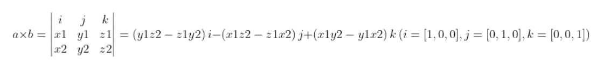

向量内积与向量外积
向量外积与向量内积(a = [x1,y1,z1], b = [x2,y2,z2]): 向量内积(点乘): 公式:c = x1*x2 + y1*y2 + z1*z2 = |a|*|b|*cos(θ) 几何意义:a或b在对方方向上投影大小 应用: 求向量夹角大小 θ = arccos(a·b/(|a|*|b|)) infered from 余弦定理 判断向量方向关系: a·b > 0 --> a、b间为锐角 a·b = 0 --> a、b正交 a·b < 0 --> a、b间为钝角 向量外积(叉乘): 公式:|a×b| = |a|*|b|*sin(θ) 注:外积值为矢量，方向垂直与a、b所组成平面，右手顺时针螺旋判断(向量矩阵乘法如下图:)
几何意义:a×b = (y1z2 - y2z1,-(x1z3 - x2z1),x1y2 - x2y1) 应用: |a×b|数值上等于a、b构成平行四边形面积 生成第三个垂直与a、b平面的向量，构建坐标系